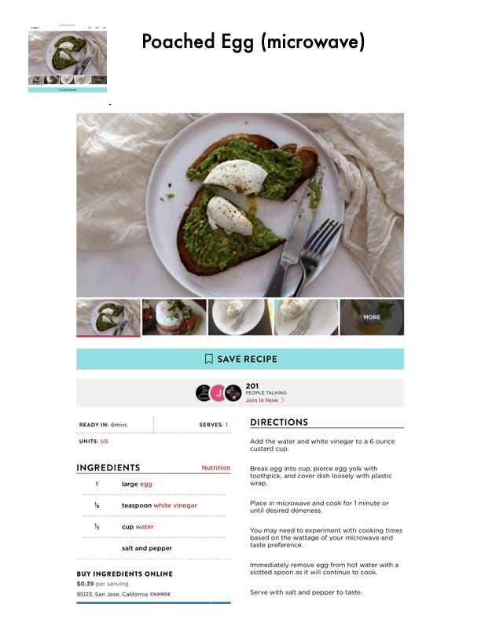

Poached Egg (microwave)

Original cookbook page 156
A quick and easy method for poaching an egg using a microwave and a custard cup.
Cook: 1 minute • Total: 6 minutes
Ingredients
- 1 large egg
- 1/3 teaspoon white vinegar
- 1/3 cup water
- Salt and pepper
Instructions
- Add the water and white vinegar to a 6 ounce custard cup.
- Break egg into cup, pierce egg yolk with toothpick, and cover dish loosely with plastic wrap.
- Place in microwave and cook for 1 minute or until desired doneness.
- You may need to experiment with cooking times based on the wattage of your microwave and taste preference.
- Immediately remove egg from hot water with a slotted spoon as it will continue to cook.
- Serve with salt and pepper to taste.
Recipe #156 from collection